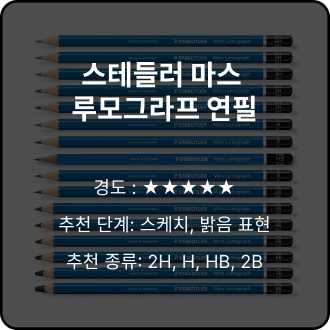

|
톰보 모노 J 연필 타 브랜드 연필에 비해 경도가 무르다는 특징이 있습니다. |
|

|
스테들러 마스 루모그라프 연필 타 브랜드 연필에 비해 경도가 있어 깔끔하게 그어지는 것이 |
|
|
미쓰비시 하이유니 연필 스테들러 연필과 톰보 연필 사이의 경도를 가진 연필입니다. |
소속: 계원예술대학교 디지털미디어 디자인과 | 이메일: clari4916@gmail.com
제작기간: 2023.11.29 ~ 2023.12.06
COPYRIGHT 2023. 남예은 . ALL RIGHTS RESERVED.